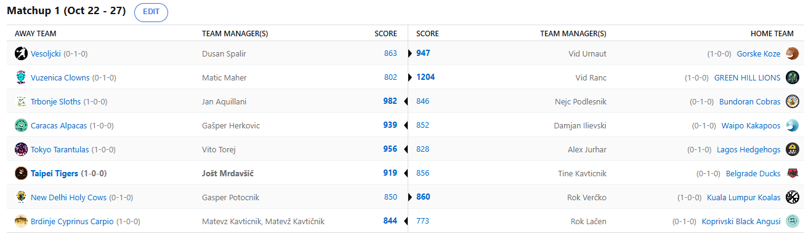

SEZONA 24/25
- Pravila in sistem tekmovanja
- Matchup1 (Oct 22 - Oct 27)
- Matchup2 (Oct 28 - Nov 3)
- Matchup3 (Nov 4 - Nov 10)
- Matchup4 (Nov 11 - Nov 17)
- Matchup5 (Nov 18 - Nov 24)
- Matchup6 (Nov 25 - Dec 1)
- Matchup7 (Dec 2 - Dec 8)
- Matchup8 (Dec 9 - Dec 15)
- Matchup9 (Dec 16 - Dec 22)
- Matchup10 (Dec 23 - Jan 29)
- Matchup11 (Dec 30 - Jan 5)
- Matchup12 (Jan 6 - Jan 12)
- Matchup13 (Jan 13 - Jan 19)
- Matchup14 (Jan 20 - Feb 26)
- Matchup15 (Jan 27 - Feb 2)
- Play-in (Feb 3 - Feb 23)
- Playoff 1 (Feb 24 - Mar 9)
- Playoff 2 (Mar 10 - Mar 23)
- Playoff 3 (Mar 24 - Apr 6)
2024/25 - Fantasy Koroška - sezona 8
MATCHUP 1 (Oct 22 - 27)
Poročilo - Matchup 1
Predolgoooo smo čakali ponedeljek, ki nam ga LM Jole popestri z recapom in končno je prispel.
Prvi teden v 16T ligi smo mislim da že vsi ugotovili da so nubaci s 15FPTS še kako dragoceni in o tem priča tudi FA market,
kjer je bilo že v prvem tednu zapravljenih kar 346$ oz. kar 4,3% celotnega budgeta. Samo trije playerji pa niso podpisali nikogar, od tega 2 managerja iz istega matchupa.
Kateri matchup je to bil se sprašujete? Ja kateri le, tisti v katerem je svoje bogato fantasy znanje razkazoval Matic Maher. Težek blowout v matchupu, odločenem v ponedeljek
(ja, vemo da se je liga začela šele v torek) je bil kakopak razlog, da niti Vid niti Matic nista potrebovala FA marketa. Pustili bomo Vuzeniškim Klovnom še kak teden,
preden jih začnemo zasmehovati še bolj, kot smo že vajeni iz prejšnjih sezon in bomo raje posebne čestitke izrekli rookiju …
Tata Ranac kot ga je poimenoval Matevž je namreč z dominantno predstavo, kot edini je zbral 1000 točk, gladko na prvem mestu lige, zaupanje v lastno moštvo pa ga je
popeljalo tudi na prvo mesto predictionov. Ali gre za začetniško srečo ali pa je prispel nov šerif v mesto? Remains to be seen!
Zadnji, ki ima še vseh 500$ v svojem prašičku pa je Kups, ki se je tudi sprehodil do prve zmage. Ker je bil Embiid na pogajanjih o pogodbi s Splošno bolnišnico Slovenj Gradec
je imel namreč S-tirovec Nejc Podlesnik obilico težav, ki jih je poskušal reševati s trošenjem para ampak mu to ni kaj dosti pomagalo, kamerunskega orjaka in latvijskega štrankla
namreč ne more nadomestiti Toumani Camara in kot pravijo, kdor visoko leta nizko pade in upajmo, da je Nejc že pripravil načrt za naprej. Lenivci so ta teden lahko počivali,
šparali in praznovali pasje rojstne dneve, a liga je neizprosna in ali so pripravljeni tudi na bolj resne matchupe kot pa je lanskoletni zmagovalec?
Lačen pa je baje smrčanje ponoči zamenjal za govorjenje, v tem tednu je namreč bilo ponoči menda slišati »SAMOOOO PA KA DRAFTAŠ NOOOO SAMOOOO!!«.
Očitno s svojim draft pomočnikom ni bil zadovoljen, a kaj ko je JackNJoe burger bolj pomemben od ekipce, ki jo bo treba gledati vse do aprila?
Morda najde Lačen v žepu poleg Andraža Koresa, ki ga ima tam od sobote še kakšen ključ do preobrata in boljšega nadaljevanja? Seveda ni mogel iz svoje kože in je že
potrošil 15% FA budgeta, pa tudi to ni pomagalo. Na drugi strani je bil bolj…. Manj slab starejši izmed bratov Tatičnik. Seveda pa imamo radi kakšno zmago Brdinjski Krapov
v zgodnji fazi tekmovanja, saj Matevž vedno izkoristi dober začetek za gobcanje in zbadanje nasprotnikov, kar seveda radi vidimo in spremljamo.
Večji problem nastane ko nastopi slaba serija, takrat je Matevž namreč na zimskem spanju v svojem brlogu in ga ni ne videti ne slišati.
Uživajmo torej v contentu, ki nam ga prinaša dokler mu gre, ker mu seveda ne bo šlo dolgo.
Najtesnejši matchup tedna in hkrati edini pod 50 točkami razlike sta odigrala G€P$ in Vero. Prvi je ponovno blestel na FA marketu, kaj je počel z
Guershonom Yabuselejem in zakaj je bilo tam potrebno potrošiti 17 zelencev ve samo on sam. Tesen poraz mu nikakor ne bo všeč za začetek sezone,
je pa Verčko ob tej priložnosti Gepsa zbodel s pomenljivim: »Lahko spremeniš ime, sam enkrat PodnGrabn, vedno PodnGrabn«.
Kaj je želel povedati mislim da razumete, mi pa Gepsu želimo, da ne bo potreboval iPhona 16 Pro Max, da se bo na lestvici videl brez scrollanja.
Verčko ni šparal na marketu, ampak se mu je to vsaj obrestovalo, ko je sezono začel z zmago. Prednost prvega picka je tako zaenkrat unovčena in ali lahko Koale
niz nadaljujejo ter si namesto evkaliptusa prihodnji teden spečejo Black Anguse?
Iz Akrapovič headquatersov se nam kot zadnji javlja Aleks Jurhar, še en izmed (as)S-tierovcev, ki mu prvi teden ni šel prav dobro od rok.
Je morda Josh Lloyd letos slabše analiziral situacijo in predlagal Aleksu napačne igralce? Je bil trejd pickov v boju za Podziemskega napaka
ali pa se lahko dvakratni prvak pobere in obrne krivuljo rezultatov navzgor? Poškodba Curryja se je seveda zgodila dan preden bi moral začeti
pretepati Ježke in predlagali bi, da Aleks preveri in zamenja gate. Kaj reči na drugi strani za še enega rookija Vita?
Očitno je Aleks imel čas v ponedeljek za žrtvovanje devičnika, h kateremu ga je povabil nasprotnik, saj so Tarantele brez večjih težav zabeležile prvo zmago.
Je Vito bolj natepel Elektro Šoštanj ali Lagoške Ježke pa naj ocenijo tisti, ki so si ogledali oba dosežka.
Da je Nejc na tier-listi vsaj Tigerse uvrstil zasluženo v S-tier pa je dokazal prvi teden. Kljub »bustu« Wembyju in poškodbam treh pomembnih členov
se je Jole sprehodil čez Beogradske Račke in zabeležil prvo zmago. Tinki Binki, ki je veselo sukal gofljo po vzoru starejšega brata čez cel teden
je vendarle na koncu padel in upravičeno mu očitno stavnice pripisujejo zgolj kvoto 2 za gajbo na pikniku. Izvrstno duplanje po našem mnenju.
Jole si je vzel čas za kratko izjavo in dejal: »Na tej točki bi si sposodil besede admina fb strani KK Prebold, ki je sicer govoril o Vranah,
a vendarle bo uporabno tudi zame: »Neke ptice nikad ne polete.« Race nimajo za burek, nasledni ptič ki ga bomo narezali pa je Kakapo.
Ne vem a je to sova al papiga, vem sam da nima šans proti Tajgrsom detttttttttt«.
Ko smo ravno pri Kakaposih, Damjan je edini rookie, ki začetniške sreče očitno nima, le upamo lahko, da je vso porabil v soboto na poker nightu?
Čeprav je bil boljši 5 od 6 dni tedna, mu vseeno ni uspelo zmagati v tem dokaj tesnem obračunu s Herkom. Slednji je bil do četrtka brez svoje
figurice alpake in ko se je z njo končno ponovno združil je z lahkoto preobrnil rezultat in zabeležil prvo zmago. Večino tedna je sicer porabil za flejmanje
ubogega Tobiasa Harrisa, ki mu v motor-cityju še ni steklo in kot glavni (in hkrati edini) Pistons fan se Gašper s tem nikakor ni mogel sprijazniti.
Je pa očitno zasluženo visoko uvrščen na tier listi in kot kaže ponovno cilja na najvišja mesta.
Po našem mnenju lahko ima isti plan tudi Vid Urnaut. Vedno slednji namreč dobro začne sezono in je vsakič strah in trepet za par krogov,
potem pa popolnoma ponikne in izpade v prvi rundi. Ali je letos leto, ko Koze ne popadajo in Vid zabeleži najvišjo uvrstitev? Začel je dobro,
s prvo zmago proti prav tako vsako leto visoko-letečim Vesoljčkom. Tudi Dušana po navadi močno pestijo poškodbe in prav privoščili bi mu kakšno
zdravo sezono, da vidimo ali je to le priročen izgovor ali pa dejanski razlog, da je v zadnjih sezona katastrofalno slab? Je pa vsaj poraženec z
največ točkami, kar ga lahko navdaja z optimizmom in ga drži na sredini lestvice. Prav na sredini pa je stal tudi ko je zadel ob zvoku sirene in
sprožil skorajšnji preobrat Jezernikov. Če že ni uspelo Jezernikom, pa naj preobrat uspe vsaj Dušanu in naj letos morda 14. mesto zamenja za kaj boljšega.
Prvi teden je pod streho in že drvimo dalje. Vsekakor bodo z vidika tekmovalnega naboja najbolj zanimivi obračuni bratov Kavt in pa obračuna obeh Rokov ter Cicija z Vitom.
S tekmovalnega vidika pa nas zanima obračun Lionsov in Alpak ter Lenivcev in Koz, ki sta edina obračuna dveh neporaženih ekip. Naj se teden 2 začne,
ne pozabite na predictione in kakopak, sučite gofljo, delajte meme in lajajte na svoje nasprotnike, uglavnem, proizvajajte content, ker LM veliko lažje
napiše smešne recape, če ima o čem pisat razen o rezultatih. GGWP